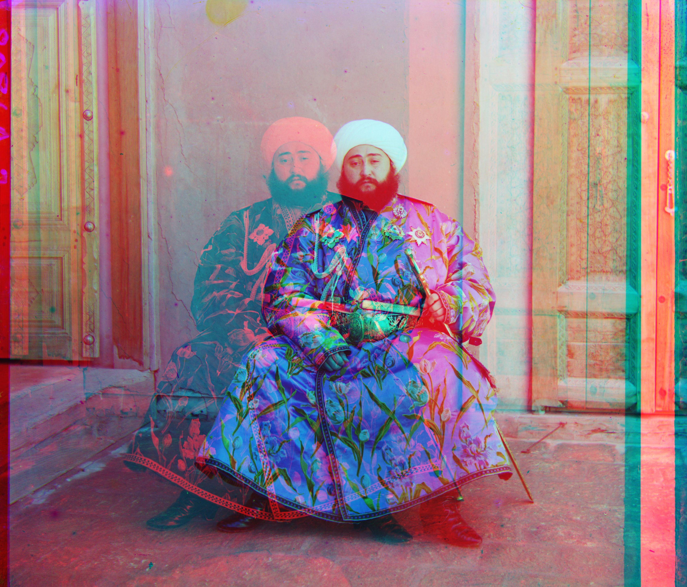
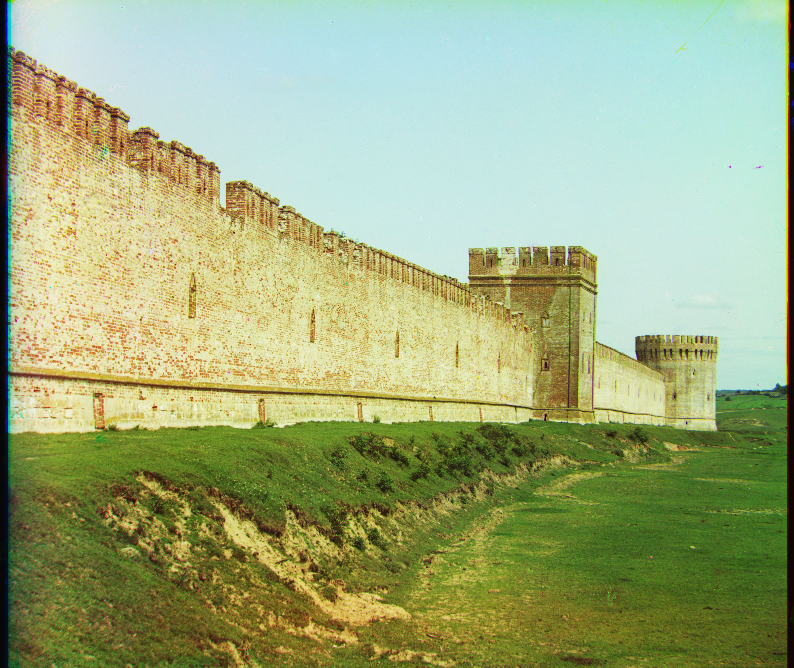
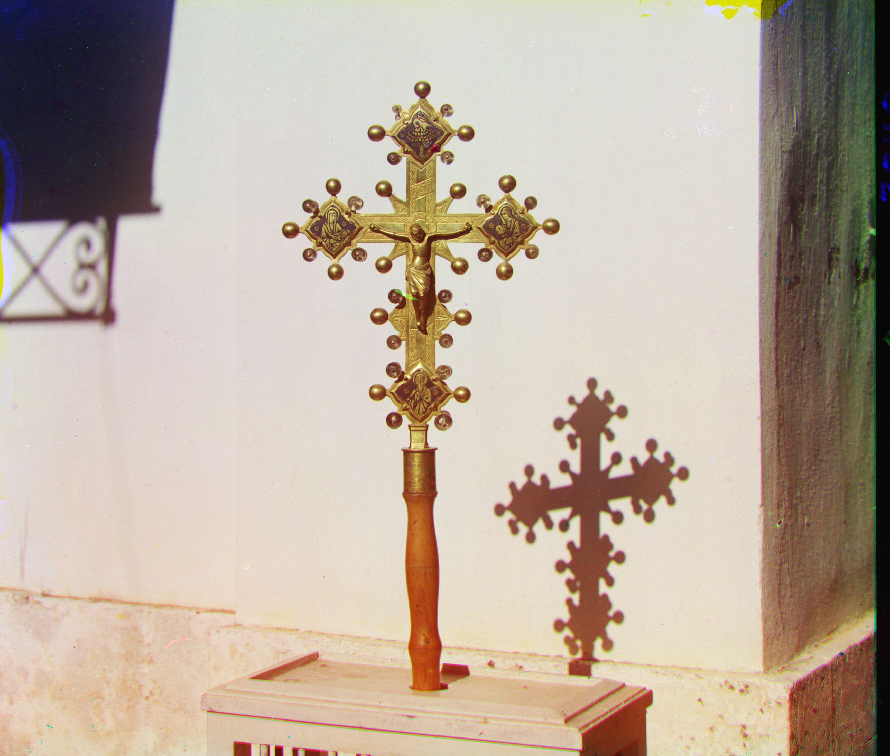
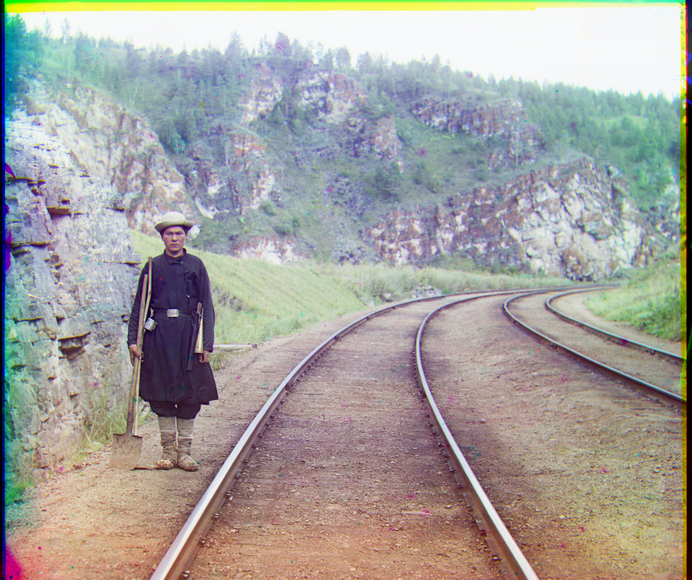

CS180 Images of the Russian Empire
Overview
In this project, I automatically colorized historical photographs from Sergei Prokudin-Gorskii's collection. I processed glass plate negatives that contained three separate exposures of each scene, taken through different color filters. I separated each input image into three equal parts representing the blue, green, and red channels.
My main technical challenge was to precisely align the green and red channels to the blue channel reference using an x,y translation model. I achieved this alignment using image matching metrics such as L2 norm or Normalized Cross-Correlation, and recorded the displacement vectors for each alignment.
Unaligned Cathedral
I initially divided the image into three, each representing the blue, green, and red channels respectively (from top to bottom).
After dividing them, I sought to align them and produce a color photograph.

Initial Approach - Simple Stack
First, I tried to see what would happen if I just divided the image in thirds, and stack them on top of each other.
The result, clearly, was not pretty.

Unaligned Cathedral
I initially divided the image into three, each representing the blue, green, and red channels respectively (from top to bottom).
After dividing them, I sought to align them and produce a color photograph.
Initial Approach - Simple Stack
First, I tried to see what would happen if I just divided the image in thirds, and stack them on top of each other.
The result, clearly, was not pretty.
Alternative Approach
Seeing this simple approach fail, I sought a different approach.
First, I used the circular_shift function to align the channels. This method shifts an image by a given offset along the vertical and horizontal axes, and enables us to test different alignments.
To measure the alignment quality quantitatively, I used the compute_ssd function to calculate sum of squared differences between the reference channel and the shifted target channel. Lower SSD values imply better alignment.
Then, I use the align_channels method to carry out a brute-fore search over a given range of shifts performed on the target channel. For every shift in this range, I calculate the SSD, and eventually choose the shift with the lowest SSD value.
For large images (i.e. the .tif files), a brute force becomes super expensive and would take a long time to run. To address this, I implemented the pyramid_align method. In this method, we create an image pyramid that is made up of progressively smaller images, each downsampled from the previous one by a factor of 2. The pyramid method aligns the images at the smallest scale, where the search space is minimal. I then refine this shift at higher resolutions by upscaling the shift.
To build this image pyramid manually, I've written the manual_downsample and manual_upsample methods, which decreases/increases the image size.
Finally, the proess_image method carries out this entire process. It reads the image, divides it into three channels, and crops each channel to remove edges (default factor of 5%). The green and red channels are aligned to the blue channel using the pyramid alignment method. Finally, I stack these aligned channels to form the output image, which is saved and displayed.
Results
Below are the results of my algorithm on the provided example images, along with the calculated offsets for each channel:
Cathedral
Green channel shift: (5, 2)
Red channel shift: (12, 3)
Monastery
Green channel shift: (-3, 2)
Red channel shift: (3, 2)
Tobolsk
Green channel shift: (3, 3)
Red channel shift: (6, 3)
Church

Green channel shift: (25, 4)
Red channel shift: (58, -4)
Icon
Green channel shift: (41, 17)
Red channel shift: (89, 23)
Harvesters
Green channel shift: (59, 16)
Red channel shift: (124, 13)
Lady
Green channel shift: (51, 9)
Red channel shift: (111, 12)
Melons
Green channel shift: (81, 10)
Red channel shift: (178, 13)
Onion Church

Green channel shift: (51, 26)
Red channel shift: (108, 36)
Sculpture

Green channel shift: (33, -11)
Red channel shift: (140, -27)
Self Portrait

Green channel shift: (78, 29)
Red channel shift: (176, 37)
Three Generations
Green channel shift: (53, 14)
Red channel shift: (112, 11)
Train
Green channel shift: (42, 5)
Red channel shift: (87, 32)
Emir (Failed Alignment)

Green channel shift: (49, 24)
Red channel shift: (93, -305)
Unlike the other images, it was difficult to align the Emirs. This was because there were significant brightness differences across the channels.
Emir (original)

As you can see here, the darkness/brightness of the Emir's cloak varies greatly across the channels. In the top-most chanel, the Emir's cloak is very bright (white). In the bottom-most channel, the cloak is very dark (almost black). This difference made it difficult to apply the algorithm nicely.
Other Images
Here are some other images from the collection that I applied my algorithm to:
Castle

Green channel shift: (25, 11)
Red channel shift: (90, 26)
Cross

Green channel shift: (67, -7)
Red channel shift: (142, -19)
Railroad

Green channel shift: (44, 12)
Red channel shift: (96, 15)